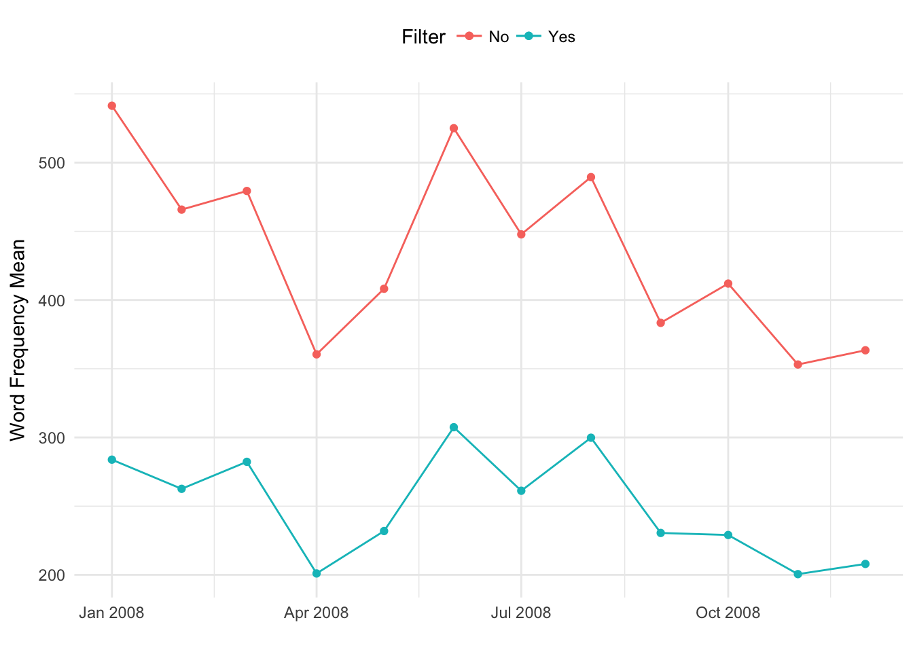

library(topicflowr)The following contains the preparation of the corpus used through all the LDA models.
#years <- as.character(2008:2016)
years <- as.character(2008)
months <- month.abb[1:12]s <- suppressPackageStartupMessages
rawCorpus <- function(year,month,folder){
#Subset in the folder containing all e-mail replies, the months of interest (leverages the fact the Month name is part of the file name)
is.document.from.month <- grepl(month,folder$doc_id)
folder.month <- folder[is.document.from.month,]
# Every e-mail reply is a document
corpus <- corpus(x=folder.month)
#2008_Feb_223.txt 2008_Feb_227.txt 2008_Feb_300.txt
#0 0 0
# Tokens
tokens <- tokens(corpus, what = "word", remove_punct = TRUE)
#tokens <- tokens_tolower(tokens)
# DFM
dfm <- dfm(tokens)
return(dfm)
}
filterCorpus <- function(year,month,folder){
#Subset in the folder containing all e-mail replies, the months of interest (leverages the fact the Month name is part of the file name)
is.document.from.month <- grepl(month,folder$doc_id)
folder.month <- folder[is.document.from.month,]
# Every e-mail reply is a document
corpus <- corpus(x=folder.month)
#2008_Feb_223.txt 2008_Feb_227.txt 2008_Feb_300.txt
#0 0 0
# Tokenize. Several assumptions made here on pre-processing.
tokens <- tokens(corpus, what = "word", remove_numbers = FALSE, remove_punct = TRUE,
remove_symbols = TRUE, remove_separators = TRUE,
remove_twitter = FALSE, remove_hyphens = FALSE, remove_url = TRUE)
tokens <- tokens_tolower(tokens)
tokens <- removeFeatures(tokens, stopwords("english"))
# Filter Empty Documents
tokens.length <- sapply(tokens,length)
tokens <- tokens[!tokens.length == 0]
# DFM
dfm <- dfm(tokens)
# DFM filter for tokens with nchar > 2 only
dfm <-dfm_select(dfm,min_nchar=2,selection="remove")
return(dfm)
}##### Monthly Corpus Statistics
get_dfm_statistics <- function(dfm){
statistics <- array(NA,3)
names(statistics) <- c("n_documents","vocabulary_size_mean","vocabulary_size_sd")
statistics["n_documents"] <- nrow(dfm)
# Avg Vocabulary Size of Each Document
words_per_document <- rowSums(dfm)
statistics["vocabulary_size_mean"] <- mean(words_per_document)
# SD Vocabulary Size of Each Document
statistics["vocabulary_size_sd"] <- sd(words_per_document)
return(statistics)
}dfm_raw <- rawCorpus(2016,"Jan")
dfm_filter <- filterCorpus(2016,"Jan")
get_dfm_statistics(dfm_raw)n_rows <- length(years)*length(months)
# Filter
statistics_filter <- data.frame(matrix(NA,length(years)*length(months),4))
names(statistics_filter) <- c("n_documents","vocabulary_size_mean","vocabulary_size_sd","timestamp")
# No Filter
statistics_no_filter <- data.frame(matrix(NA,length(years)*length(months),4))
names(statistics_no_filter) <- c("n_documents","vocabulary_size_mean","vocabulary_size_sd","timestamp")
for (i in 1:length(years)){
fd.path <- paste0("~/Desktop/PERCEIVE/full_disclosure_corpus/",years[i],".parsed")
folder <- loadFiles(parsed.corpus.folder.path=fd.path,corpus_setup="/**/*.reply.title_body.txt")
print(paste0("Year: ",years[i]))
for(j in 1:length(months)){
timestamp <- as.character(ymd(str_c(years[i]," ",months[j]," ","1")))
# With filter
statistic_filter <- get_dfm_statistics(filterCorpus(years[i],months[j],folder))
statistic_filter['timestamp'] <- timestamp
statistics_filter[(i-1)*length(months) + j,] <- statistic_filter
# With no filter
statistic_no_filter <- get_dfm_statistics(rawCorpus(years[i],months[j],folder))
statistic_no_filter['timestamp'] <- timestamp
statistics_no_filter[(i-1)*length(months) + j,] <- statistic_no_filter
# print(paste0("Year: ",years[i]," month: ",months[j]))
}
}## [1] "Year: 2008"# Filter
statistics_filter <- data.table(statistics_filter)
statistics_filter$n_documents <- as.numeric(statistics_filter$n_documents)
statistics_filter$vocabulary_size_mean <- as.numeric(statistics_filter$vocabulary_size_mean)
statistics_filter$vocabulary_size_sd <- as.numeric(statistics_filter$vocabulary_size_sd)
statistics_filter$timestamp <- ymd(statistics_filter$timestamp)
#No Filter
statistics_no_filter <- data.table(statistics_no_filter)
statistics_no_filter$n_documents <- as.numeric(statistics_no_filter$n_documents)
statistics_no_filter$vocabulary_size_mean <- as.numeric(statistics_no_filter$vocabulary_size_mean)
statistics_no_filter$vocabulary_size_sd <- as.numeric(statistics_no_filter$vocabulary_size_sd)
statistics_no_filter$timestamp <- ymd(statistics_no_filter$timestamp)
#plot_table$year <- factor(year(plot_table$timestamp))
#plot_table$month <- factor(month(plot_table$timestamp))ggplot(statistics_filter, aes(timestamp, vocabulary_size_mean)) + geom_line(aes(color="Yes")) + xlab("") + ylab("Word Frequency Mean") + theme_minimal() +
geom_point(data=statistics_filter,aes(x=timestamp,y=vocabulary_size_mean,color="Yes")) +
geom_line(data = statistics_no_filter, aes(x = timestamp, y = vocabulary_size_mean,color = "No")) +
geom_point(data=statistics_no_filter,aes(x=timestamp,y=vocabulary_size_mean,color="No")) +
labs(color="Filter") +
theme(legend.position="top") 
#+ geom_ribbon(aes(ymax = vocabulary_size_mean + vocabulary_size_sd, ymin = vocabulary_size_mean - vocabulary_size_sd), alpha = 0.5)spike_2009 <- statistics_no_filter[vocabulary_size_sd > 4000]
spike_2010 <- statistics_no_filter[vocabulary_size_sd > 2000 & vocabulary_size_sd < 4000]
ggplot(statistics_filter, aes(timestamp, vocabulary_size_sd)) + geom_line(aes(color="Yes")) + xlab("") + ylab("Word Frequency Standard Deviation") + theme_minimal() +
geom_point(data=statistics_filter,aes(x=timestamp,y=vocabulary_size_sd,color="Yes")) +
geom_line(data = statistics_no_filter, aes(x = timestamp, y = vocabulary_size_sd,color = "No")) +
geom_point(data=statistics_no_filter,aes(x=timestamp,y=vocabulary_size_sd,color="No")) +
labs(color="Filter") +
theme(legend.position="top") +
geom_text(aes(spike_2009$timestamp, spike_2009$vocabulary_size_sd - 80, label = "2009_Apr_186", vjust = -1), colour = '#000000', size = 3,show.legend = FALSE) +
geom_text(aes(spike_2010$timestamp, spike_2010$vocabulary_size_sd, label = "2010_Oct_364, 2010_Oct_368, 2010_Oct_372 ", vjust = -1), colour = '#000000', size = 3,show.legend = FALSE) fd.path <- paste0("~/Desktop/PERCEIVE/full_disclosure_corpus/",2009,".parsed")
folder <- loadFiles(parsed.corpus.folder.path=fd.path,corpus_setup="/**/*.reply.title_body.txt")
spike_2009 <- filterCorpus("2009","Apr",folder)
spike_2009_words_per_document <- rowSums(spike_2009)
barplot(spike_2009_words_per_document)spike_2009_words_per_document[spike_2009_words_per_document > 8000]fd.path <- paste0("~/Desktop/PERCEIVE/full_disclosure_corpus/",2010,".parsed")
folder <- loadFiles(parsed.corpus.folder.path=fd.path,corpus_setup="/**/*.reply.title_body.txt")
spike_2010 <- filterCorpus("2009","Oct",folder)
spike_2010_words_per_document <- rowSums(spike_2010)
barplot(spike_2010_words_per_document)```
spike_2010_words_per_document[spike_2010_words_per_document > 10000]spike_docs_2009 <- statistics_no_filter[n_documents == 979]
spike_docs_2011 <- statistics_no_filter[n_documents == 995]
ggplot(statistics_filter, aes(timestamp, n_documents)) + geom_line(aes(color="Yes")) + xlab("") + ylab("Number of Documents") + theme_minimal() +
geom_point(data=statistics_filter,aes(x=timestamp,y=n_documents,color="Yes")) +
geom_line(data = statistics_no_filter, aes(x = timestamp, y = n_documents,color = "No")) +
geom_point(data=statistics_no_filter,aes(x=timestamp,y=n_documents,color="No")) +
labs(color="Filter") +
theme(legend.position="top") +
geom_text(aes(spike_docs_2009$timestamp, spike_docs_2009$n_documents, label = "January 2009", vjust = -1), colour = '#000000', size = 3,show.legend = FALSE) +
geom_text(aes(spike_docs_2011$timestamp, spike_docs_2011$n_documents - 10, label = "October 2011", vjust = -1), colour = '#000000', size = 3,show.legend = FALSE) validation_path <- "/Users/carlos/MEGA/Validation/FD Emails Labeled with CVE ID"
file_names <- list.files(validation_path,pattern="*.csv")
validation_paths <- file.path(validation_path,file_names)
validation_files <- lapply(validation_paths,fread)
validation_file <- rbindlist(validation_files)[,.(cve_id,file_id)]
# View(validation_file[month == "Dec" & year == "2014"])
# write.csv(validation_file[month == "Dec" & year == "2014"],"~/Desktop/december_2014_spike.csv")validation_file$month <- sapply(str_split(validation_file$file_id,"_"),"[[",2)
validation_file$year <- sapply(str_split(validation_file$file_id,"_"),"[[",1)
validation_frequency <- validation_file[,.(frequency=.N),by=c("month","year")]
validation_frequency$timestamp <- ymd(str_c(validation_frequency$year," ",validation_frequency$month," ","1"))spike_2014 <- validation_frequency[frequency > 150]
ggplot(validation_frequency, aes(timestamp, frequency)) + geom_line() + xlab("") + ylab("Number of Documents with CVE-ID") + theme_minimal() +
geom_point(data=validation_frequency,aes(x=timestamp,y=frequency)) +
geom_text(aes(spike_2014$timestamp, spike_2014$frequency, label = "December 2014", vjust = -1), colour = '#000000', size = 3,show.legend = FALSE)validation_frequency_per_cveid <- validation_file[,.(frequency=.N),by=c("cve_id","month","year")]
#validation_frequency_per_cveid$timestamp <- ymd(str_c(validation_frequency_per_cveid$year," ",validation_frequency_per_cveid$month," ","1"))
f2 <- validation_frequency_per_cveid[frequency==2,.(frequency_2=.N),by=c("month","year")]
f3 <- validation_frequency_per_cveid[frequency==3,.(frequency_3=.N),by=c("month","year")]
f4 <- validation_frequency_per_cveid[frequency==4,.(frequency_4=.N),by=c("month","year")]
f5 <- validation_frequency_per_cveid[frequency==5,.(frequency_5=.N),by=c("month","year")]
f2$timestamp <- ymd(str_c(f2$year," ",f2$month," ","1"))
f3$timestamp <- ymd(str_c(f3$year," ",f3$month," ","1"))
f4$timestamp <- ymd(str_c(f4$year," ",f4$month," ","1"))
f5$timestamp <- ymd(str_c(f5$year," ",f5$month," ","1"))
f2 <- f2[order(timestamp)]
f3 <- f3[order(timestamp)]
f4 <- f4[order(timestamp)]
f5 <- f5[order(timestamp)]
f2$cumsum <- cumsum(f2[["frequency_2"]])
f3$cumsum <- cumsum(f3[["frequency_3"]])
f4$cumsum <- cumsum(f4[["frequency_4"]])
f5$cumsum <- cumsum(f5[["frequency_5"]])
ggplot(f2, aes(timestamp, cumsum,color="2")) + geom_line() + xlab("") + ylab("Cumulative Frequency of documents with the same CVE-IDs") + theme_minimal() +
geom_line(data = f3, aes(x = timestamp, y = cumsum,color = "3")) +
geom_line(data = f4, aes(x = timestamp, y = cumsum,color = "4")) +
geom_point(data = f5, aes(x = timestamp, y = cumsum,color = "5")) +
geom_point(data=f2,aes(x=timestamp,y=cumsum,color="2")) +
geom_point(data=f3,aes(x=timestamp,y=cumsum,color="3")) +
geom_point(data=f4,aes(x=timestamp,y=cumsum,color="4")) +
geom_text(aes(ymd("2017-01-01"), 64, label = "64", vjust = -1), color = "#F8766D", size = 3,show.legend = FALSE) +
geom_text(aes(ymd("2016-10-01"), 11, label = "11", vjust = -1), color = "#7CAE00", size = 3,show.legend = FALSE) +
geom_text(aes(ymd("2015-09-01"), 3, label = "3", vjust = -1), color = "#00BFC4", size = 3,show.legend = FALSE) +
geom_text(aes(ymd("2014-04-01"), 1, label = "1", vjust = -1), color = "#C77CFF", size = 3,show.legend = FALSE) +
labs(color="Number of Documents") +
theme(legend.position="top")
# geom_point(data=validation_frequency_per_cveid,aes(x=timestamp,y=frequency))